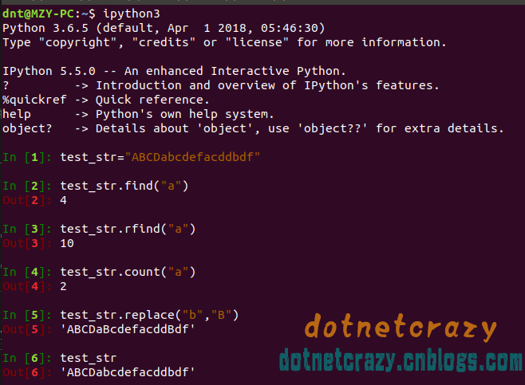

Code：https://github.com/lotapp/BaseCode
多图旧排版：https://www.cnblogs.com/dunitian/p/9119986.html
在线编程：https://mybinder.org/v2/gh/lotapp/BaseCode/master
Python设计的目的就是 ==> 让程序员解放出来，不要过于关注代码本身
步入正题：欢迎提出更简单或者效率更高的方法
基础系列：（这边重点说说Python，上次讲过的东西我就一笔带过了）
user_num1=input("输入第一个数：")
user_num2=input("输入第二个数：")
print("两数之和：%d"%(int(user_num1)+int(user_num2)))
user_name=input("输入昵称：")
user_pass=input("输入密码：")
user_url="192.168.1.121"
#拼接输出方式一：
print("ftp://"+user_name+":"+user_pass+"@"+user_url)
#拼接输出方式二：
print("ftp://%s:%s@%s"%(user_name,user_pass,user_url))
user_str="七大姑曰：工作了吗？八大姨问：买房了吗？异性说：结婚了吗？"
#遍历
for item in user_str:
print(item,end=" ") # 不换行，以“ ”方式拼接
#长度：len(user_str)
len(user_str)
# #第一个元素：user_str[0]
user_str[0]
# 最后一个元素：user_str[-1]
print(user_str[-1])
print(user_str[len(user_str)-1])#其他编程语言写法
#倒数第二个元素：user_str[-2]
print(user_str[-2])
print(user_str[len(user_str)-2])#其他编程语言写法
python切片语法：[start_index:end_index:step] （end_index取不到）
eg:str[1:4] 取str[1]、str[2]、str[3]
eg:str[2:] 取下标为2开始到最后的元素
eg:str[2:-1] 取下标为2～到倒数第二个元素（end_index取不到）
eg:str[1:6:2] 隔着取～str[1]、str[3]、str[5]（案例会详细说）
eg:str[::-1] 逆向输出（案例会详细说）
it_str="我爱编程，编程爱它，它是程序，程序是谁？"
# eg:取“编程爱它” it_str[5:9]
print(it_str[5:9])
print(it_str[5:-11]) # end_index用-xx也一样
print(it_str[-15:-11])# start_index用-xx也可以
# eg:取“编程爱它，它是程序，程序是谁？” it_str[5:]
print(it_str[5:])# 不写默认取到最后一个
# eg:一个隔一个跳着取（"我编，程它它程，序谁"） it_str[0::2]
print(it_str[0::2])# step=△index（eg:0,1,2,3。这里的step=> 2-0 => 间隔1）
# eg:倒序输出 it_str[::-1]
# end_index不写默认是取到最后一个，是正取（从左往右）还是逆取（从右往左），就看step是正是负
print(it_str[::-1])
print(it_str[-1::-1])# 等价于上一个
这次为了更加形象对比，一句一句翻译成C#
有没有发现规律，user_str[user_str.Length-1]==> -1是最后一个
user_str[user_str.Length-2]==> -2是最后第二个
python的切片其实就是在这方面简化了
%%script csharp
//# # 字符串遍历、下标、切片
//# user_str="七大姑曰：工作了吗？八大姨问：买房了吗？异性说：结婚了吗？"
var user_str = "七大姑曰：工作了吗？八大姨问：买房了吗？异性说：结婚了吗？";
//# #遍历
//# for item in user_str:
//# print(item,end=" ")
foreach (var item in user_str)
{
Console.Write(item);
}
//# #长度：len(user_str)
//# print(len(user_str))
Console.WriteLine(user_str.Length);
//# #第一个元素：user_str[0]
//# print(user_str[0])
Console.WriteLine(user_str[0]);
//# #最后一个元素：user_str[-1]
//# print(user_str[-1])
//# print(user_str[len(user_str)-1])#其他编程语言写法
Console.WriteLine(user_str[user_str.Length - 1]);
//
//# #倒数第二个元素：user_str[-2]
//# print(user_str[-2])
Console.WriteLine(user_str[user_str.Length - 2]);
其实你用Python跟其他语言对比反差更大，net真的很强大了。
补充（对比看就清楚Python的step为什么是2了，i+=2==>2）
%%script csharp
//# 切片:[start_index:end_index:step] （end_index取不到）
//# eg:str[1:4] 取str[1]、str[2]、str[3]
//# eg:str[2:] 取下标为2开始到最后的元素
//# eg:str[2:-1] 取下标为2～到倒数第二个元素（end_index取不到）
//# eg:str[1:6:2] 隔着取～str[1]、str[3]、str[5]（案例会详细说）
//# eg:str[::-1] 逆向输出（案例会详细说，）
//
var it_str = "我爱编程，编程爱它，它是程序，程序是谁？";
//
//#eg:取“编程爱它” it_str[5:9]
// print(it_str[5:9])
// print(it_str[5:-11]) #end_index用-xx也一样
// print(it_str[-15:-11])#start_index用-xx也可以
//Substring(int startIndex, int length)
Console.WriteLine(it_str.Substring(5, 4));//第二个参数是长度
//
//#eg:取“编程爱它，它是程序，程序是谁？” it_str[5:]
// print(it_str[5:])#不写默认取到最后一个
Console.WriteLine(it_str.Substring(5));//不写默认取到最后一个
//#eg:一个隔一个跳着取（"我编，程它它程，序谁"） it_str[0::2]
// print(it_str[0::2])#step=△index（eg:0,1,2,3。这里的step=> 2-0 => 间隔1）
//这个我第一反应是用linq ^_^
for (int i = 0; i < it_str.Length; i += 2)//对比看就清除Python的step为什么是2了，i+=2==》2
{
Console.Write(it_str[i]);
}
Console.WriteLine("\n倒序：");
//#eg:倒序输出 it_str[::-1]
//# end_index不写默认是取到最后一个，是正取（从左往右）还是逆取（从右往左），就看step是正是负
// print(it_str[::-1])
// print(it_str[-1::-1])#等价于上一个
for (int i = it_str.Length - 1; i >= 0; i--)
{
Console.Write(it_str[i]);
}
//其实可以用Linq：Console.WriteLine(new string(it_str.ToCharArray().Reverse().ToArray()));
test_str = "ABCDabcdefacddbdf"
# 查找:find,rfind,index,rindex
# xxx.find(str, start, end)
print(test_str.find("cd"))#从左往右
print(test_str.rfind("cd"))#从右往左
print(test_str.find("dnt"))#find和rfind找不到就返回-1
# index和rindex用法和find一样，只是找不到会报错（以后用find系即可）
print(test_str.index("dnt"))
python：xxx.count(str, start, end)
# 计数:count
# xxx.count(str, start, end)
print(test_str.count("d"))#4
print(test_str.count("cd"))#2
Python：xxx.replace(str1, str2, 替换次数)
# 替换:replace
# xxx.replace(str1, str2, 替换次数)
print(test_str)
print(test_str.replace("b","B"))#并没有改变原字符串，只是生成了一个新的字符串
print(test_str)
# replace可以指定替换几次
print(test_str.replace("b","B",1))#ABCDaBcdefacddbdf
split（按指定字符分割）,splitlines(按行分割)
partition(以str分割成三部分,str前，str和str后),rpartition（从右边开始）
说下 split的切片用法：print(test_input.split(" ",3)) 在第三个空格处切片，后面的不切了
# 分割:split（按指定字符分割）,splitlines(按行分割),partition(以str分割成三部分,str前，str和str后),rpartition
test_list=test_str.split("a")#a有两个，按照a分割，那么会分成三段，返回类型是列表（List），并且返回结果中没有a
print(test_list)
test_input="hi my name is dnt"
print(test_input.split(" ")) #返回列表格式（后面会说）['hi', 'my', 'name', 'is', 'dnt']
print(test_input.split(" ",3))#在第三个空格处切片，后面的不管了
继续说说splitlines(按行分割)，和split("\n")的区别：
# splitlines()按行分割，返回类型为List
test_line_str="abc\nbca\ncab\n"
print(test_line_str.splitlines())#['abc', 'bca', 'cab']
print(test_line_str.split("\n"))#看出区别了吧：['abc', 'bca', 'cab', '']
# splitlines(按行分割)，和split("\n")的区别没看出来就再来个案例
test_line_str2="abc\nbca\ncab\nLLL"
print(test_line_str2.splitlines())#['abc', 'bca', 'cab', 'LLL']
print(test_line_str2.split("\n"))#再提示一下，最后不是\n就和上面一样效果
扩展：split()，默认按 空字符切割(空格、\t、\n等等，不用担心返回'')
# 扩展：split()，默认按空字符切割(空格、\t、\n等等，不用担心返回'')
print("hi my name is dnt\t\n m\n\t\n".split())
最后说一下partition和rpartition: 返回是元祖类型（后面会说的）
方式和find一样，找到第一个匹配的就罢工了【注意一下没找到的情况】
# partition(以str分割成三部分,str前，str和str后)
# 返回是元祖类型（后面会说的）,方式和find一样，找到第一个匹配的就罢工了【注意一下没找到的情况】
print(test_str.partition("cd"))#('ABCDab', 'cd', 'efacddbdf')
print(test_str.rpartition("cd"))#('ABCDabcdefa', 'cd', 'dbdf')
print(test_str.partition("感觉自己萌萌哒"))#没找到：('ABCDabcdefacddbdf', '', '')
join :"-".join(test_list)
# 连接：join
# separat.join(xxx)
# 错误用法：xxx.join("-")
print("-".join(test_list))
startswith（以。。。开头）,endswith（以。。。结尾）
# 头尾判断:startswith（以。。。开头）,endswith（以。。。结尾）
# test_str.startswith（以。。。开头）
start_end_str="http://www.baidu.net"
print(start_end_str.startswith("https://") or start_end_str.startswith("http://"))
print(start_end_str.endswith(".com"))
# 大小写系:lower(字符串转换为小写),upper(字符串转换为大写)
# title(单词首字母大写),capitalize(第一个字符大写，其他变小写)
print(test_str)
print(test_str.upper())#ABCDABCDEFACDDBDF
print(test_str.lower())#abcdabcdefacddbdf
print(test_str.capitalize())#第一个字符大写，其他变小写
lstrip（去除左边空格）,rstrip（去除右边空格）
strip （去除两边空格）美化输出系列：ljust,rjust,center
ljust，rjust，center这些就不说了，python经常在linux终端中输出，所以这几个用的比较多
# 格式系列：lstrip（去除左边空格）,rstrip（去除右边空格）,strip（去除两边空格）美化输出系列：ljust,rjust,center
strip_str=" I Have a Dream "
print(strip_str.strip()+"|")#我加 | 是为了看清后面空格，没有别的用处
print(strip_str.lstrip()+"|")
print(strip_str.rstrip()+"|")
#这个就是格式化输出，就不讲了
print(test_str.ljust(50))
print(test_str.rjust(50))
print(test_str.center(50))
isalpha（是否是纯字母）,isalnum（是否是数字|字母）
isdigit（是否是纯数字）,isspace（是否是纯空格）
注意~ test_str5=" \t \n " # isspace() ==>true
# 验证系列:isalpha（是否是纯字母）,isalnum（是否是数字|字母）,isdigit（是否是纯数字）,isspace（是否是纯空格）
# 注意哦~ test_str5=" \t \n " #isspace() ==>true
test_str2="Abcd123"
test_str3="123456"
test_str4=" \t" #isspace() ==>true
test_str5=" \t \n " #isspace() ==>true
test_str.isalpha() #是否是纯字母
test_str.isalnum() #是否是数字|字母
test_str.isdigit() #是否是纯数字
test_str.isspace() #是否是纯空格
test_str2.isalnum() #是否是数字和字母组成
test_str2.isdigit() #是否是纯数字
test_str3.isdigit() #是否是纯数字
test_str5.isspace() #是否是纯空格
test_str4.isspace() #是否是纯空格
像这些方法练习用ipython3就好了（sudo apt-get install ipython3）
code的话需要一个个的print，比较麻烦（我这边因为需要写文章，所以只能一个个code）

%%script csharp
var test_str = "ABCDabcdefacddbdf";
//# # 查找:find,rfind,index,rindex
//# # xxx.find(str, start, end)
//# print(test_str.find("cd"))#从左往右
Console.WriteLine(test_str.IndexOf('a'));//4
Console.WriteLine(test_str.IndexOf("cd"));//6
//# print(test_str.rfind("cd"))#从右往左
Console.WriteLine(test_str.LastIndexOf("cd"));//11
//# print(test_str.find("dnt"))#find和rfind找不到就返回-1
Console.WriteLine(test_str.IndexOf("dnt"));//-1
这个真用基础来解决的话，两种方法：
第一种自己变形一下：(原字符串长度 - 替换后的长度) / 字符串长度
//# # 计数:count
//# # xxx.count(str, start, end)
// print(test_str.count("d"))#4
// print(test_str.count("cd"))#2
// 第一反应，字典、正则、linq，后来想怎么用基础知识解决，于是有了这个~(原字符串长度-替换后的长度)/字符串长度
Console.WriteLine(test_str.Length - test_str.Replace("d", "").Length);//统计单个字符就简单了
Console.WriteLine((test_str.Length - test_str.Replace("cd", "").Length) / "cd".Length);
Console.WriteLine(test_str);//不用担心原字符串改变（python和C#都是有字符串不可变性的）
字符串统计另一种方法(就用index)
int count = 0;
int index = input.IndexOf("abc");
while (index != -1)
{
count++;
index = input.IndexOf("abc", index + 3);//index指向abc的后一位
}
替换指定次数的功能有点业余，就不说了，你可以自行思考哦~
%%script csharp
var test_str = "ABCDabcdefacddbdf";
Console.WriteLine(test_str.Replace("b", "B"));
split里面很多重载方法，可以自己去查看下
eg:Split("\n",StringSplitOptions.RemoveEmptyEntries)
再说一下这个：test_str.Split('a'); //返回数组
如果要和Python一样返回列表==》test_str.Split('a').ToList(); 【需要引用linq的命名空间哦】
var test_array = test_str.Split('a');//返回数组（如果要返回列表==》test_str.Split('a').ToList();）
var test_input = "hi my name is dnt";
//# print(test_input.split(" ")) #返回列表格式（后面会说）['hi', 'my', 'name', 'is', 'dnt']
test_input.Split(" ");
//# 按行分割，返回类型为List
var test_line_str = "abc\nbca\ncab\n";
//# print(test_line_str.splitlines())#['abc', 'bca', 'cab']
test_line_str.Split("\n", StringSplitOptions.RemoveEmptyEntries);
%%script csharp
var start_end_str = "http://www.baidu.net";
//# print(start_end_str.startswith("https://") or start_end_str.startswith("http://"))
System.Console.WriteLine(start_end_str.StartsWith("https://") || start_end_str.StartsWith("http://"));
//# print(start_end_str.endswith(".com"))
System.Console.WriteLine(start_end_str.EndsWith(".com"));
%%script csharp
var strip_str = " I Have a Dream ";
//# print(strip_str.strip()+"|")#我加 | 是为了看清后面空格，没有别的用处
Console.WriteLine(strip_str.Trim() + "|");
//# print(strip_str.lstrip()+"|")
Console.WriteLine(strip_str.TrimStart() + "|");
//# print(strip_str.rstrip()+"|")
Console.WriteLine(strip_str.TrimEnd() + "|");
string.IsNullOrEmpty 和 string.IsNullOrWhiteSpace 是系统自带的
%%script csharp
var test_str4 = " \t";
var test_str5 = " \t \n "; //#isspace() ==>true
// string.IsNullOrEmpty 和 string.IsNullOrWhiteSpace 是系统自带的，其他的你需要自己封装一个扩展类
Console.WriteLine(string.IsNullOrEmpty(test_str4)); //false
Console.WriteLine(string.IsNullOrWhiteSpace(test_str4));//true
Console.WriteLine(string.IsNullOrEmpty(test_str5));//false
Console.WriteLine(string.IsNullOrWhiteSpace(test_str5));//true
其他的你需要自己封装一个扩展类（eg：简单封装）
using System;
using System.Collections.Generic;
using System.Linq;
using System.Text.RegularExpressions;
public static partial class ValidationHelper
{
#region 常用验证
#region 集合系列
/// <summary>
/// 判断集合是否有数据
/// </summary>
/// <typeparam name="T"></typeparam>
/// <param name="list"></param>
/// <returns></returns>
public static bool ExistsData<T>(this IEnumerable<T> list)
{
bool b = false;
if (list != null && list.Count() > 0)
{
b = true;
}
return b;
}
#endregion
#region Null判断系列
/// <summary>
/// 判断是否为空或Null
/// </summary>
/// <param name="objStr"></param>
/// <returns></returns>
public static bool IsNullOrWhiteSpace(this string objStr)
{
if (string.IsNullOrWhiteSpace(objStr))
{
return true;
}
else
{
return false;
}
}
/// <summary>
/// 判断类型是否为可空类型
/// </summary>
/// <param name="theType"></param>
/// <returns></returns>
public static bool IsNullableType(Type theType)
{
return (theType.IsGenericType && theType.GetGenericTypeDefinition().Equals(typeof(Nullable<>)));
}
#endregion
#region 数字字符串检查
/// <summary>
/// 是否数字字符串(包括小数)
/// </summary>
/// <param name="objStr">输入字符串</param>
/// <returns></returns>
public static bool IsNumber(this string objStr)
{
try
{
return Regex.IsMatch(objStr, @"^\d+(\.\d+)?$");
}
catch
{
return false;
}
}
/// <summary>
/// 是否是浮点数
/// </summary>
/// <param name="objStr">输入字符串</param>
/// <returns></returns>
public static bool IsDecimal(this string objStr)
{
try
{
return Regex.IsMatch(objStr, @"^(-?\d+)(\.\d+)?$");
}
catch
{
return false;
}
}
#endregion
#endregion
#region 业务常用
#region 中文检测
/// <summary>
/// 检测是否有中文字符
/// </summary>
/// <param name="objStr"></param>
/// <returns></returns>
public static bool IsZhCN(this string objStr)
{
try
{
return Regex.IsMatch(objStr, "[\u4e00-\u9fa5]");
}
catch
{
return false;
}
}
#endregion
#region 邮箱验证
/// <summary>
/// 判断邮箱地址是否正确
/// </summary>
/// <param name="objStr"></param>
/// <returns></returns>
public static bool IsEmail(this string objStr)
{
try
{
return Regex.IsMatch(objStr, @"^([\w-\.]+)@((\[[0-9]{1,3}\.[0-9]{1,3}\.[0-9]{1,3}\.)|(([\w-]+\.)+))([a-zA-Z]{2,4}|[0-9]{1,3})(\]?)$");
}
catch
{
return false;
}
}
#endregion
#region IP系列验证
/// <summary>
/// 是否为ip
/// </summary>
/// <param name="objStr"></param>
/// <returns></returns>
public static bool IsIP(this string objStr)
{
return Regex.IsMatch(objStr, @"^((2[0-4]\d|25[0-5]|[01]?\d\d?)\.){3}(2[0-4]\d|25[0-5]|[01]?\d\d?)$");
}
/// <summary>
/// 判断输入的字符串是否是表示一个IP地址
/// </summary>
/// <param name="objStr">被比较的字符串</param>
/// <returns>是IP地址则为True</returns>
public static bool IsIPv4(this string objStr)
{
string[] IPs = objStr.Split('.');
for (int i = 0; i < IPs.Length; i++)
{
if (!Regex.IsMatch(IPs[i], @"^\d+$"))
{
return false;
}
if (Convert.ToUInt16(IPs[i]) > 255)
{
return false;
}
}
return true;
}
/// <summary>
/// 判断输入的字符串是否是合法的IPV6 地址
/// </summary>
/// <param name="input"></param>
/// <returns></returns>
public static bool IsIPV6(string input)
{
string temp = input;
string[] strs = temp.Split(':');
if (strs.Length > 8)
{
return false;
}
int count = input.GetStrCount("::");
if (count > 1)
{
return false;
}
else if (count == 0)
{
return Regex.IsMatch(input, @"^([\da-f]{1,4}:){7}[\da-f]{1,4}$");
}
else
{
return Regex.IsMatch(input, @"^([\da-f]{1,4}:){0,5}::([\da-f]{1,4}:){0,5}[\da-f]{1,4}$");
}
}
#endregion
#region 网址系列验证
/// <summary>
/// 验证网址是否正确（http:或者https:）【后期添加 // 的情况】
/// </summary>
/// <param name="objStr">地址</param>
/// <returns></returns>
public static bool IsWebUrl(this string objStr)
{
try
{
return Regex.IsMatch(objStr, @"http://([\w-]+\.)+[\w-]+(/[\w- ./?%&=]*)?|https://([\w-]+\.)+[\w-]+(/[\w- ./?%&=]*)?");
}
catch
{
return false;
}
}
/// <summary>
/// 判断输入的字符串是否是一个超链接
/// </summary>
/// <param name="objStr"></param>
/// <returns></returns>
public static bool IsURL(this string objStr)
{
string pattern = @"^[a-zA-Z]+://(\w+(-\w+)*)(\.(\w+(-\w+)*))*(\?\S*)?$";
return Regex.IsMatch(objStr, pattern);
}
#endregion
#region 邮政编码验证
/// <summary>
/// 验证邮政编码是否正确
/// </summary>
/// <param name="objStr">输入字符串</param>
/// <returns></returns>
public static bool IsZipCode(this string objStr)
{
try
{
return Regex.IsMatch(objStr, @"\d{6}");
}
catch
{
return false;
}
}
#endregion
#region 电话+手机验证
/// <summary>
/// 验证手机号是否正确
/// </summary>
/// <param name="objStr">手机号</param>
/// <returns></returns>
public static bool IsMobile(this string objStr)
{
try
{
return Regex.IsMatch(objStr, @"^13[0-9]{9}|15[012356789][0-9]{8}|18[0123456789][0-9]{8}|147[0-9]{8}$");
}
catch
{
return false;
}
}
/// <summary>
/// 匹配3位或4位区号的电话号码，其中区号可以用小括号括起来，也可以不用，区号与本地号间可以用连字号或空格间隔，也可以没有间隔
/// </summary>
/// <param name="objStr"></param>
/// <returns></returns>
public static bool IsPhone(this string objStr)
{
try
{
return Regex.IsMatch(objStr, "^\\(0\\d{2}\\)[- ]?\\d{8}$|^0\\d{2}[- ]?\\d{8}$|^\\(0\\d{3}\\)[- ]?\\d{7}$|^0\\d{3}[- ]?\\d{7}$");
}
catch
{
return false;
}
}
#endregion
#region 字母或数字验证
/// <summary>
/// 是否只是字母或数字
/// </summary>
/// <param name="objStr"></param>
/// <returns></returns>
public static bool IsAbcOr123(this string objStr)
{
try
{
return Regex.IsMatch(objStr, @"^[0-9a-zA-Z\$]+$");
}
catch
{
return false;
}
}
#endregion
#endregion
}